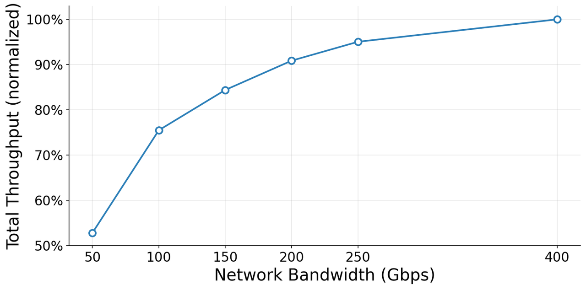
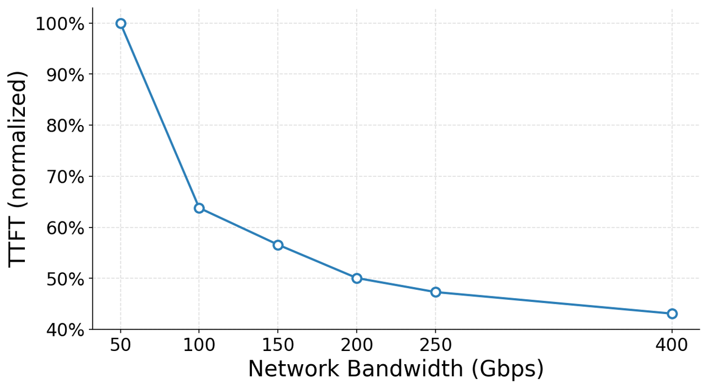
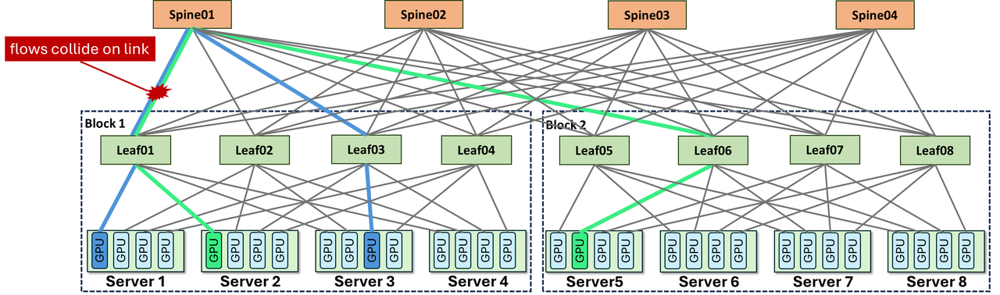
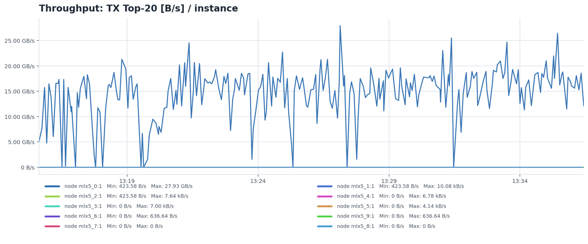
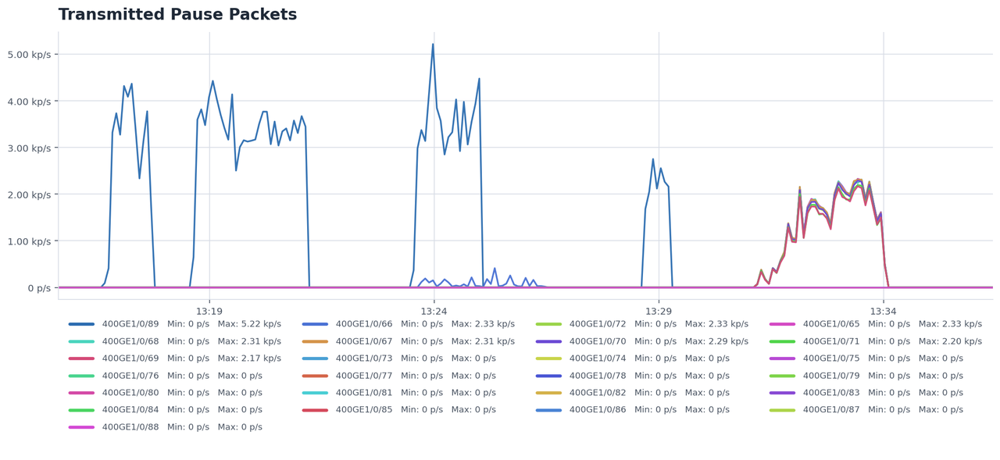
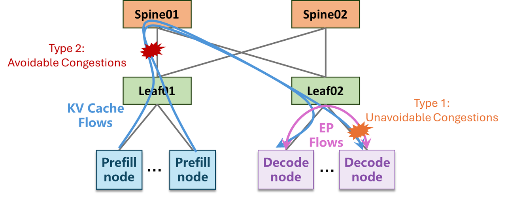
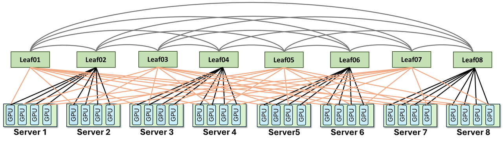
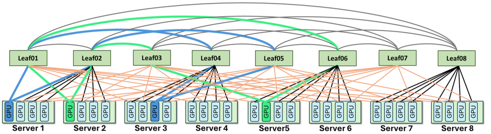
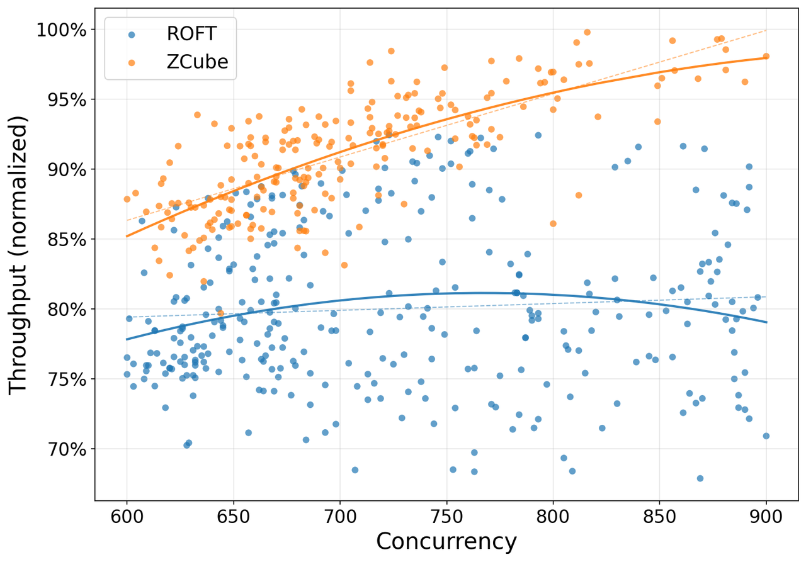
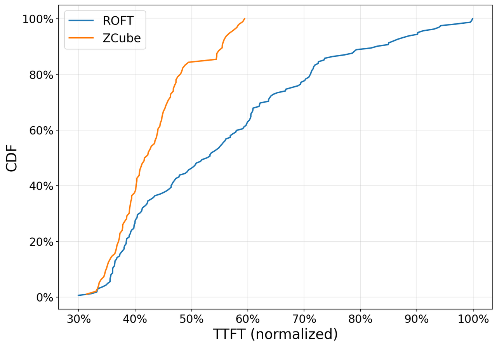

Prefill 和 Decode 被拆开
Prefill 阶段吞吐型更强，负责处理长 prompt 并生成 KV Cache；Decode 阶段延迟敏感，逐 token 生成。为了提高资源利用率，生产系统越来越倾向把两类任务放到不同节点池。
这篇 Z.ai 文章真正有价值的地方，不是宣布“换个网络拓扑更快”，而是把一个正在发生的系统拐点讲清楚：Prefill-Decode 分离让 KV Cache 迁移变成动态、非对称、跨节点的主流流量，传统按训练流量优化的 ROFT/Fat-Tree 很容易出现“总带宽够，但局部路径被打爆”的结构性低效。
传统视角里，LLM 推理优化更容易盯 GPU kernel、batching、KV Cache 管理、调度器和量化。但长上下文和 Prefill-Decode 分离把大量 KV Cache 迁移放到了跨 GPU、跨节点网络上，网络不再只是后台连接层，而是直接影响吞吐、尾延迟和单 token 成本。
Prefill 阶段吞吐型更强，负责处理长 prompt 并生成 KV Cache；Decode 阶段延迟敏感，逐 token 生成。为了提高资源利用率，生产系统越来越倾向把两类任务放到不同节点池。
一旦 prefill 和 decode 不在同一节点，prompt 对应的 KV Cache 就要通过网络转移。长上下文越长，KV Cache 越大；服务越动态，源节点和目标节点的组合越不可预测。
用户感知首先落在 TTFT，也就是从请求发出到第一个 token 返回的时间。局部链路队列堆积、PFC Pause 和热点交换机，会把少数请求拖成 P99 慢尾。


这里的网络瓶颈不是简单的“所有链路都不够快”。更危险的是“全局总带宽看起来够，但某些 Leaf、端口队列或 rail 被流量映射集中击中”。这种局部拥塞更难靠加机器、加 GPU 或平均带宽指标发现。
要理解 ZCube，最好不要先看拓扑图，而是先跟随一次长上下文请求。PD 分离之后，请求不是“进一张 GPU，出一串 token”这么简单，而是先在 prefill 池生成大块 KV Cache，再把这块热数据交给 decode 池继续逐 token 生成。
一个常用估算是：单个请求的 KV Cache 字节数约等于
layers × tokens × 2(K,V) × kv_heads × head_dim × bytes_per_element。
这个公式不依赖 Z.ai 的私有模型细节，工程上用于判断“跨节点搬 KV”是不是已经大到足以影响网络。
所以网络瓶颈不是“每个 token 都要跨节点传一次”。关键在于 prefill 完成后的 KV handoff 往往是大块、同步、短时间窗口内发生的流量；当调度器把很多 handoff 指向相似路径时，局部队列会立刻变成 TTFT 慢尾。
ROFT，Rail-Optimized Fat-Tree，是为降低跨层转发和适配规则训练通信而设计的 Fat-Tree 变体。它把相同 GPU index 的设备连到同一类 rail，训练中的 AllReduce 或 All-to-All 通常更规则；但 PD 推理里的 KV Cache 源宿关系动态变化，rail 映射很容易从“有序”变成“集中冲突”。
大规模训练里，很多通信模式来自 collective：AllReduce、ReduceScatter、AllGather、All-to-All。它们依然复杂，但通信对象和节奏相对可预期，拓扑可以围绕这些模式做 rail 优化。
在线推理里，哪个 prefill 节点把 KV Cache 发给哪个 decode 节点，取决于请求长度、队列状态、batching、模型副本、调度器和可用 GPU。源、宿、流量大小都更动态。
ROFT 的出发点很合理：训练时经常希望同一个 rail 上的 GPU 走更短、更规则的路径，减少跨层转发，让 collective 的通信模式更稳定。但 PD 推理不是同一张通信矩阵。它的边是由在线调度实时生成的：今天一批长 prompt 可能从 prefill group A 打到 decode group D，下一分钟又因为 decode 队列变化打到 group B。
这会让一个原本为“规则集合通信”服务的 rail 映射，突然承担“动态大对象搬运”的任务。只要多个 prefill 节点的 KV handoff 被映射到同一批 Leaf、同一组上行链路或同一个 NIC rail，系统就会出现一个很反直觉的现象：总体 bisection bandwidth 看起来还可以，单机网卡也没满，但某些交换机端口已经排队很深。
通信对象由并行策略决定，节奏与 iteration 同步，消息大小和参与集合相对可预测。拓扑优化可以围绕 tensor/pipeline/expert parallel 的稳定模式展开。
通信对象由线上请求、prompt 长度、队列状态、batch 合并和调度策略共同决定。它更像一张不断变化的二部图：prefill 实例在左边，decode 实例在右边，边权是 KV Cache 大小。
因此，ZCube 文章里最重要的概念其实是 topology-induced congestion：不是目的地本身太热，而是拓扑和路径选择把本可以分开的流压到了同一路径。这个问题靠简单升级网卡速率只能缓解，不能从结构上消除。



| 拥塞类型 | 形成原因 | 处理方式 | ZCube 关注点 |
|---|---|---|---|
| 不可避免拥塞 | 多个发送方同时打向同一个最终目的地，最后一跳物理链路天然会竞争。 | 拥塞控制、流量整形、调度、限速。 | 不能完全消除，只能缓解。 |
| 可避免拥塞 | 拓扑、端口映射、路径选择或 multipath 利用不均，让本不该冲突的流量被压到同一路径。 | 自适应路由、packet spraying、MRC，或直接重做网络架构。 | 核心目标：在拓扑层减少这类冲突的发生概率。 |

ZCube 的核心不是“多买交换机”，而是反过来去掉 Spine 层，把 Leaf 分成两个集合，做完全二部图互联，再让 GPU 的双端口 NIC 分别以互补模式接入两组交换机。这样既保留可扩展性，又让源宿对更自然地分散到不同路径。
传统 Clos/Fat-Tree 依赖 Leaf-Spine 分层扩展。ZCube 直接移除 Spine，把交换机分成奇数和偶数两组，让两组之间形成 complete bipartite graph，也就是每个奇数组交换机都连接每个偶数组交换机。
每个 GPU/NIC 有两个端口，分别连到两组交换机。一个连接模式按连续 GPU range 接入，另一个按相对 index 跨组接入。两种模式互补，避免所有流量都被同一种 rail 规则绑定。
官方博客称 ZCube routing strategy 能让 GPU pair 拥有唯一最优路径。工程含义是：少依赖哈希运气来做负载均衡，让拓扑和路由直接把不同 pair 映射到更均匀的路径空间。

可以把 ZCube 想成给每个 GPU 两种不同的身份证：一个身份证按连续 GPU 分组，另一个按跨组相对位置分散。只用一种身份证时，调度器一旦连续选中某类 GPU，流量就容易落到同一批 Leaf；两种身份证叠加后，同一批 GPU 在另一侧交换机上的分布会被打散，源宿对自然更难全部挤到同一条局部路径。
这不是传统意义上“多路径哈希更随机”的思路。ZCube 更接近“让连接关系本身具备均匀性”：路径选择不完全依赖 ECMP 哈希碰运气，而是在布线和路由层面让不同 GPU pair 更容易拥有互不冲突的短路径。
KV handoff 从 prefill 池打到 decode 池时，更多流会自然落到不同 Leaf-pair 或不同 inter-switch link 上，队列深度和 PFC Pause 更少，TTFT P99 更稳定。
移除 Spine 层后，交换机与光模块数量减少。官方 claim 的成本下降不是靠牺牲 GPU 或软件能力，而是改变网络层级和互联方式。
这里最容易误解的是“扁平二部图是不是会限制规模”。Z.ai 的论点不是所有规模都用同一张小图，而是在给定 GPU 数量、交换机端口数和双端口 NIC 假设下，通过二部互联获得足够短的网络直径与更好的路径分散；规模继续上升时，仍需要和端口密度、线缆长度、机柜布局、故障域一起设计。

| 维度 | ROFT / Clos 视角 | ZCube 视角 | 对 PD 推理的影响 |
|---|---|---|---|
| 拓扑形态 | Leaf-Spine 分层，依赖跨层转发和负载均衡。 | Leaf 级完全二部扁平互联，网络直径约为两跳交换机。 | 减少层级带来的路径集中和额外转发。 |
| GPU 接入 | 按 rail 优化，适合某些规则 collective。 | 单轨和多轨混合接入，连接模式互补。 | 更适合源宿关系动态变化的 KV Cache 迁移。 |
| 冲突来源 | ECMP、静态端口映射、热点 Leaf 可能叠加。 | 通过拓扑和路由降低不必要路径冲突。 | 降低 PFC、排队和 TTFT 慢尾概率。 |
| 成本结构 | Spine 层和对应光模块成本高。 | 移除 Spine，官方称交换机和光模块成本下降约三分之一。 | 同等 GPU 规模下，用网络架构释放更多有效推理容量。 |
ZCube 给外部团队最有价值的不是“照抄拓扑”，而是一套诊断顺序：先确认 KV transfer 是否真的进入关键路径，再判断问题是带宽总量不足、调度热点，还是拓扑诱发的局部拥塞。
| 问题 | 应该采集的数据 | 如何解释 |
|---|---|---|
| TTFT 慢尾是否和 KV transfer 同步出现？ | per-request 时间线：排队、prefill、KV transfer、首步 decode、首 token 返回。 | 如果 P99 TTFT 主要卡在 KV handoff 窗口，网络和调度应进入第一优先级。 |
| 平均带宽低但仍然排队，是否存在局部热点？ | per-port utilization、egress queue depth、PFC Pause、ECN/CNP、per-rail load、per-leaf load。 | 端口或 Leaf 维度的尖峰比集群平均带宽更关键；平均值平滑掉的正是慢尾来源。 |
| 热点来自目的地过载，还是路径映射冲突？ | source/destination pair、flow size、decode GPU 排队、目标节点入站端口利用率。 | 如果目的地确实过热，优先改调度和限流；如果目的地不热但中间链路热，才更像拓扑诱发拥塞。 |
| 调度器是否在放大网络冲突？ | prefill/decode placement、batch 形成规则、模型副本布局、cache transfer path。 | 拓扑和调度要一起看。一个 topology-aware scheduler 可能在不改硬件时先释放部分收益。 |
| 升级网络速率是否足够？ | 100G/200G cap ablation、链路热点分布、TTFT 与吞吐曲线。 | 如果提高带宽收益明显但热点仍集中，说明既有带宽问题也有有效带宽利用问题。 |
先把请求级时间线和交换机指标对齐，再判断是否需要拓扑级改造。不要因为看到 P99 变差就直接归因于网络，也不要因为 GPU utilization 不满就只调 batching。PD 分离之后，GPU 空等、网络排队和调度热点会互相伪装。
这篇材料有两层证据：SIGCOMM 论文层面证明 ZCube 是 ATOP 搜索出的高性价比训练拓扑；Z.ai 博客层面报告它在 GLM-5.1 coding 推理服务中的生产部署结果。两层相关，但不能混为一谈。
| 来源 | 评估对象 | 关键结果 | 可解释性边界 |
|---|---|---|---|
| SIGCOMM 2025 program 摘要 | ATOP 自动拓扑优化，规模覆盖 256、1024、4096、16384 GPU，目标包含训练流量、collective 性能、容错和网络成本。 | ZCube 相比 ROFT、Rail-only、HPN，模拟中端到端 LLM 训练速度提升 3% 到 7%，网络硬件成本下降 26% 到 46%；真实 testbed 中成本下降 25%，AllReduce 和 All-to-All 性能保持。 | 这是训练拓扑论文，不是 GLM-5.1 推理生产报告。它证明 ZCube 的拓扑来源和训练通信性能，不直接证明推理业务指标。 |
| Z.ai 官方博客带宽 ablation | 32-GPU testbed，保持 GPU、软件栈、模型和应用逻辑不变，只调整 NIC 带宽 cap。 | 100Gbps 到 200Gbps 时，整体推理吞吐约提升 19%，TTFT 约下降 22%。 | 能说明网络是瓶颈之一，但不是 ZCube 前后对比；而且没有公开完整 workload mix 和误差区间。 |
| Z.ai 官方博客生产部署 | 千卡级 GLM-5.1 coding 推理服务，网络从 ROFT 升级到 ZCube，GPU、server、软件栈和应用不变。 | 平均 GPU 推理吞吐提升超过 15%，P99 TTFT 下降 40.6%，交换机和光模块 CapEx 下降约 33%，发布时稳定运行超过两周。 | 这是最贴近业务价值的证据，但公开材料没有给原始数据、请求分布、调度策略、PFC 配置、故障注入和长期稳定性细节。 |


“网络成本下降 33% 同时吞吐提升 15%”不是说每个小集群都应该立刻重构拓扑。它更准确的适用范围是：已经有跨节点 PD 分离、长上下文、KV Cache 迁移、RoCE/PFC 压力和尾延迟问题的大规模推理集群。没有这些流量特征，ZCube 的部署复杂度可能超过收益。
这是一篇生产部署介绍，不是完整 benchmark paper。因此它的方向性很清楚，但公开证据的粒度还不足以让外部团队直接复现全部结论。
GLM-5.1 coding workload 的请求长度分布、并发、batching 策略、prefill/decode ratio、cache size、模型副本布局没有展开。这些因素会显著影响 KV Cache 迁移压力。
公开图里能看到前后对比，但没有置信区间、重复实验次数、峰谷时段划分和异常日剔除策略。P99 TTFT 很容易被流量分布和调度策略影响。
博客提到原有 cabling、IP addressing、routing policies 和 switch configuration 不能直接复用，需要 ZCube Controller、布局设计工具和线缆校验程序。这不是“换个拓扑图”那么简单。
虽然 GPU、软件栈和应用不变，但实际迁移中 routing、cabling correctness、交换机配置和运维自动化都会变。外部读者应把结果理解为“ZCube 网络方案”收益，而不只是数学拓扑收益。
ZCube 的 claim 是可信且重要的，但它不是一个通用“网络银弹”。它解决的是特定规模、特定通信模式下 topology-induced congestion。若瓶颈主要在模型 kernel、scheduler、memory fragmentation、speculative decoding 命中率或外部业务网关，ZCube 不会自动带来同等收益。
这篇文章最值得带走的是诊断框架：别只问“GPU 利用率为什么不高”，还要问“网络把哪些本可并行的 KV Cache 流错误地压到同一组路径上了”。
| 工程动作 | 为什么重要 | 可观察信号 |
|---|---|---|
| 按 PD 流量重放网络仿真 | 训练 collective trace 不等于在线推理 trace。需要用真实 prefill/decode placement 和 KV size 分布评估拓扑。 | flow size、source/destination pair、per-rail load、per-leaf load。 |
| 把 TTFT P99 和交换机队列联动分析 | 慢尾可能来自局部队列，不一定来自 decode GPU 算力。 | PFC Pause、egress queue depth、ECN/CNP、端口利用率、per-request TTFT。 |
| 让 scheduler 感知拓扑 | 即使拓扑更好，调度器仍可能把大量 KV 迁移压向同一局部路径。PD placement 和拓扑应该协同。 | prefill/decode assignment、cache transfer path、热 Leaf 命中率。 |
| 把网络 CapEx 纳入 token cost | 推理成本不只是 GPU 租金或折旧。交换机、光模块、布线和故障恢复都决定长期 token economics。 | 每 1K token 的 GPU cost、network hardware amortization、可服务 RPS。 |
如果是做推理平台，ZCube 这篇文章暗示的优先级不是“马上买新交换机”，而是把网络纳入 serving pipeline 的观测和调度闭环。最低成本的第一步，是把每个请求的 prefill GPU、decode GPU、KV bytes、transfer duration 和 TTFT 绑定到同一条 trace 上；第二步才是按 source/destination pair 重放流量，比较现有拓扑、topology-aware placement 和新拓扑的差异。
真正成熟的系统不会把 scheduler、KV manager、RDMA 网络和 SLO 看成四个孤立模块。长上下文推理里，scheduler 选择的不是“一个空闲 GPU”，而是在选择一条未来会承载 KV Cache 的网络路径；KV manager 管的也不只是显存碎片，而是热数据在集群里的迁移成本。
ZCube 的深层意义，是 LLM 推理基础设施正在从“把训练集群改一改拿来 serving”，进入“围绕模型流量形态重新设计系统”的阶段。
过去很多推理优化是点状的：更快的 attention kernel、更好的 batching、更低精度、更省 KV 的 cache policy。ZCube 展示的是另一类优化：当模型服务规模足够大时，流量形态本身会反过来定义数据中心网络。PD 分离把 KV Cache 变成在线系统的“热数据迁移层”，而 ZCube 试图让这个迁移层在拓扑上天然少冲突。
换句话说，ZCube 不是把网络从 100Gbps 换成 200Gbps 那种线性扩容故事，而是“让同样的带宽更可用”。这正是大规模推理系统里最有价值的系统工程：不是追求纸面峰值，而是减少局部结构性浪费，让更多 GPU 时间真正变成 token。
如果一个推理集群已经进入长上下文、PD 分离、跨节点 KV Cache 迁移和 P99 延迟敏感的阶段，那么网络拓扑就不再是通用基础设施，而是模型 serving pipeline 的一部分；ZCube 的价值在于把这个事实落实成了可部署的拓扑和生产指标。
主材料是 Z.ai 在 X 上发布的长文，短链指向 X Article。为了避免只读社交媒体版本，本文同步参考了 Z.ai 官方博客、SIGCOMM 2025 program 页面和 DBLP 记录。
X Article 文本里，带宽 ablation 写作“512-GPU cluster”；Z.ai 官方博客同一段写作“32-GPU testbed”。两者其他内容高度一致。这里我把官方博客作为更可能被修正过的 canonical 版本，报告中引用“32-GPU testbed”，并保留这个差异作为可信度边界。